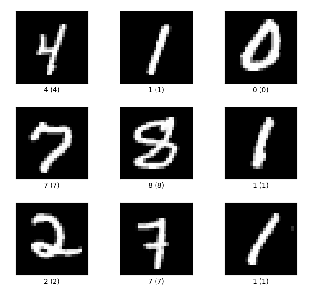

1.1 新手速览
使用 Keras API 构建手写数字识别模型！
创建日期: 2022-07-16
本教程简单使用 Keras 来进行以下几点：
-
加载预先构建的数据集；
-
构建对图像进行分类的神经网络机器学习模型；
-
训练构建的神经网络；
-
评估模型的准确性。
学习本教程必须具备 Python 基础知识，可以阅读教程 Python 语言入门，针对机器学习而编写。代码实现在文件 quickstart_beginner.py 中，可在本地电脑上安装 Python 环境，下载相关依赖，点击运行！
以下示例图片由程序 show_mnist_tfds.py 生成：
1.1.1 设置
程序中引入 Keras 和 TensorFlow (可选) 库：
import keras
import tensorflow as tf
print('Keras version:', keras.__version__)
print('TensorFlow version:', tf.__version__)输出两者的版本号，因为程序简单，版本差异不影响最终结果：
Keras version: 3.6.0 TensorFlow version: 2.18.0
TensorFlow 是一个端到端的机器学习开源平台。Keras 是一个可以使用 TensorFlow 作为后端的深度学习 API ，让开发人员能够简单、灵活地构建模型！
1.1.2 加载数据集
加载并准备 MNIST 数据集，图像像素值范围为 [0, 255] 。通过将这些值除以 255.0 ，缩小到 [0, 1] 的范围，这还会将样本数据从整形转换为浮点型：
(x_train, y_train), (x_test, y_test) = keras.datasets.mnist.load_data()
x_train, x_test = x_train / 255.0, x_test / 255.01.1.3 构建模型
建立 keras.models.Sequential 模型：
model = keras.models.Sequential([
keras.layers.Flatten(input_shape=(28, 28)),
keras.layers.Dense(128, activation='relu'),
keras.layers.Dropout(0.1),
keras.layers.Dense(10)
])Sequential 用于将 层 (Layer) 进行堆叠，其中每一层都有一个输入张量和一个输出张量。层是具有已知数学结构的函数，可以重复使用，并具有可训练的变量。大多数 TensorFlow 模型是由层组成，本模型使用了 Flatten 、Dense 和 Dropout 层。
对于每个示例，模型都会返回一个 Logits 分数 向量，向量的长度为类别 (0-9) 的个数（本示例为 10）。
NUM = 5
predictions = model.call(x_train[:NUM]).numpy()
print(numpy.round(predictions, 3))获取 5 个样本，输入到模型中，输出 Logits 分数，保留 3 位小数：
[[-0.797 0.542 -0.022 -0.481 0.255 -0.392 -0.245 -0.312 0.504 0.064] [-0.379 0.724 -0.208 -0.074 0.267 -0.277 -0.065 -0.521 0.559 -0.346] [-0.696 0.233 0.224 -0.351 -0.181 -0.293 0.202 -0.245 0.535 -0.139] [-0.348 -0.472 -0.281 -0.101 0.154 -0.258 -0.396 -0.699 0.596 -0.044] [-0.544 0.774 -0.79 -0.719 0.233 -0.238 -0.13 -0.153 0.599 -0.2 ]]
使用 tf.nn.softmax 函数将这些 Logits 分数转换为每个类别的 概率 (Probability) ：
probabilities = tf.nn.softmax(predictions).numpy()
print(numpy.round(probabilities, 3))[[0.045 0.173 0.098 0.062 0.129 0.068 0.079 0.073 0.166 0.107] [0.065 0.196 0.077 0.088 0.124 0.072 0.089 0.056 0.166 0.067] [0.05 0.128 0.127 0.071 0.084 0.076 0.124 0.079 0.173 0.088] [0.08 0.07 0.085 0.102 0.132 0.087 0.076 0.056 0.205 0.108] [0.057 0.214 0.045 0.048 0.125 0.078 0.087 0.085 0.18 0.081]]
注：可以将 tf.nn.softmax 函数嵌入到网络最后一层的激活函数中。虽然这样做可以让模型输入更容易理解，但是不建议采用这种方法，因为在使用 softmax 输出后，不可能为所有模型提供精确且数值稳定的损失计算。
使用 keras.losses.SparseCategoricalCrossentropy 为训练过程定义损失函数：
loss_fn = keras.losses.SparseCategoricalCrossentropy(from_logits=True)损失函数接收一个真实值向量和一个 Logits 值向量，为每个样本返回一个标量损失。此损失为对应真实类别的 Logits 值的负对数函数值：如果模型确定正确的类别，则损失为零。
未经训练的模型给出的概率是随机的（每个类别为 1/10 ），所以初始损失应该接近 \(-ln(1/10) ~= 2.3\) ：
print(loss_fn(y_train[:NUM], predictions).numpy())2.442869
在开始训练之前，需要使用 Model.compile 函数配置并编译模型。将 optimizer 参数设置为 adam ，使用 loss_fn 作为损失函数，并通过 metrics 指定需要评估的指标：
model.compile(optimizer='adam',
loss=loss_fn,
metrics=['accuracy'])1.1.4 训练与评估
使用 Model.fit 方法调整模型的参数并最小化损失：
model.fit(x_train, y_train, epochs=5)训练过程中模型识别的准确率逐渐提高，最终达到 98.30% ：
Epoch 1/5 1875/1875 ━━━━━━━━━━━━━━━━━━━━ 3s 1ms/step - accuracy: 0.8643 - loss: 0.4636.2900 Epoch 2/5 1875/1875 ━━━━━━━━━━━━━━━━━━━━ 3s 1ms/step - accuracy: 0.9584 - loss: 0.1399 Epoch 3/5 1875/1875 ━━━━━━━━━━━━━━━━━━━━ 3s 1ms/step - accuracy: 0.9719 - loss: 0.0934 Epoch 4/5 1875/1875 ━━━━━━━━━━━━━━━━━━━━ 3s 2ms/step - accuracy: 0.9795 - loss: 0.0696 Epoch 5/5 1875/1875 ━━━━━━━━━━━━━━━━━━━━ 3s 1ms/step - accuracy: 0.9830 - loss: 0.0572
使用 Model.evaluate 方法在测试集上评估模型的性能：
model.evaluate(x_test, y_test, verbose=2)模型在从未看过的样本上依然有 97.65% 的正确率（稍微低于训练）：
313/313 - 0s - 1ms/step - accuracy: 0.9765 - loss: 0.0735
如果我们希望模型返回一个概率，可以包装训练好的模型，将 softmax 层附加在最后：
probability_model = keras.Sequential([
model,
keras.layers.Softmax()
])用测试集前 5 张图片进行测试，它们的标签分别是：[7 2 1 0 4] ，可以看到和预测结果是一致的：
probabilities = probability_model(x_test[:NUM]).numpy()
print(numpy.round(probabilities, 3))
print('Predict label:', probabilities.argmax(axis=-1))
print('True label:', y_test[:NUM])[[0. 0. 0. 0. 0. 0. 0. 1. 0. 0. ] [0. 0.001 0.999 0. 0. 0. 0. 0. 0. 0. ] [0. 0.999 0. 0. 0. 0. 0. 0.001 0. 0. ] [1. 0. 0. 0. 0. 0. 0. 0. 0. 0. ] [0. 0. 0. 0. 0.994 0. 0. 0.001 0. 0.005]] Predict label: [7 2 1 0 4] True label: [7 2 1 0 4]
恭喜！我们已经使用 Keras 的 API ，利用预先构建的数据集，训练了机器学习模型。